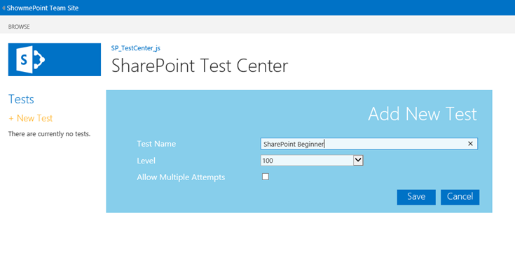
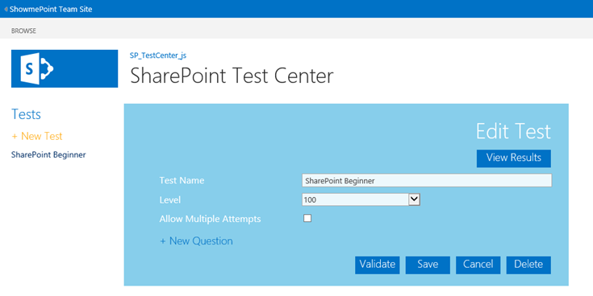
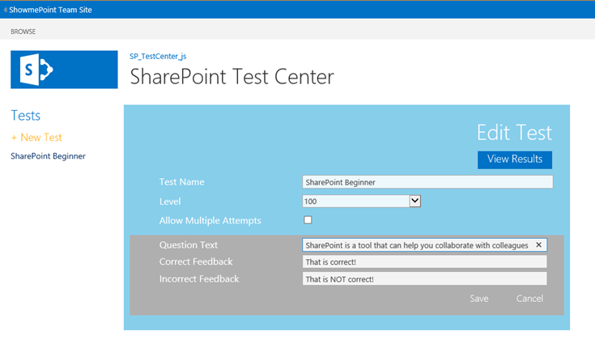
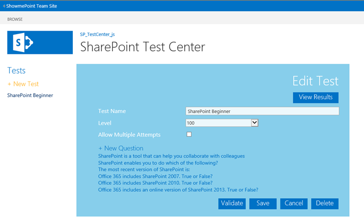
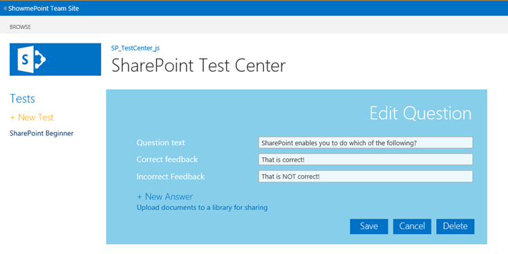
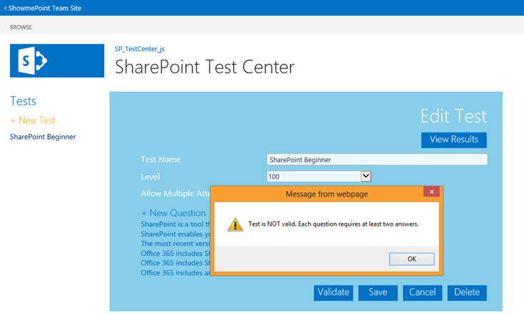
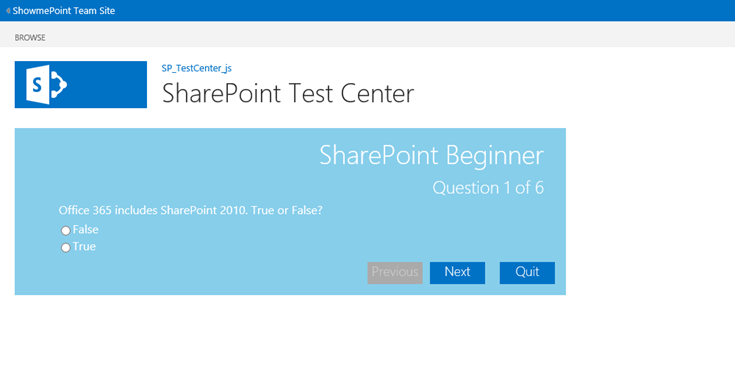
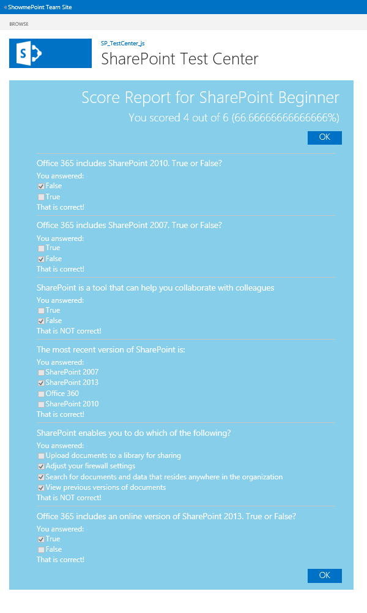

Demonstrates how to use JavaScript and jQuery in an app for SharePoint to implement a scenario for creating tests and quizzes, enabling students to take the tests, and reporting on student performance in the tests.
Provided by: Martin Harwar, Point8020.com
In this app, there are two types of users: test creators (administrators) and test takers (students).
This solution is based on the SharePoint-hosted app template provided by Visual Studio 2012. The solution uses the JavaScript implementation of the client object model to read, create, update, and delete data from lists based on user actions. The lists included in this solution represent quizzes, their questions, their answers, and results of students who have taken tests.
The lists are related to each other through look-up fields, and the user interface ensures that all data operations synchronize with their list items so that the relationships are maintained. The user interface is implemented with HTML elements and Cascading Style Sheet (CSS) styles to present a modern look and feel. JavaScript and jQuery are used to control all aspects of the user interface, and the solution contains no server-side code.
Prerequisites
This sample requires the following:
-
Visual Studio 2012
-
Office Developer Tools for Visual Studio 2012
-
Either:
-
Access to an Office 365 Enterprise site that has been configured to host apps (recommended). In this environment, you will be able to add multiple users to the site, and you can then treat those users as adminstrators or students.
Note Using an Office 365 Developer Site is not recommended because you will probably not be able to add accounts that represent students.
-
SharePoint Server 2013 configured to host apps, and with a Developer Site Collection already created.
-
Key components
The sample app contains the following:
-
The Default.aspx webpage, which is used to present the test-design process for the administrator and the student test user interface for attempting tests.
-
The App.js file in the scripts folder, which is used to retrieve and manage test, question, answer, and result data by using the JavaScript implementation of the client object model (JSOM). The App.js file also contains the user interface logic that is implemented in Default.aspx.
-
The App.css file in the contents folder, which contains style definitions used by the elements in Default.aspx.
-
List definition instances for tests, questions, answers, and results.
-
All other files are automatically provided by the Visual Studio 2012 project template for apps for SharePoint, and they have not been modified in the development of this sample app.
Configure the sample
Follow these steps to configure the sample.
-
Open the SP_TestCenter_js.sln file with Visual Studio 2012.
-
In the Properties window, add the full URL to your Office 365 Enterprise site or SharePoint Server 2013 Developer Site Collection to the Site URL property. You may be prompted to provide credentials if you have added a URL to an Office 365 site.
-
No other configuration is necessary.
Build, run, and test the sample
-
Press Ctrl+Shift+B to build the solution.
-
Press F5 to run the app.
-
Sign in to your SharePoint Server 2013 or Office 365 Enterprise site if you are prompted to do so by the browser.
-
When the app appears, it determines whether you are an administrator or student based on your SharePoint permissions. If your permissions include "manage web", you are an administrator, otherwise you are a student.
If you are an administrator, the starting screen will resemble Figure 1. From here, you can start creating tests.
Users who are not administrators will see their starting screen as described in step 15.
Figure 1. Administrator start screen

-
When you click New Test, you are presented with a form to enter a title and a level for the test, and to specify whether a student can take the test more than once. Figure 2 shows the form.
Figure 2. New test form
 -
When you save a new test, its name appears in the list of available tests.Click a test to edit its properties and add questions to the test, as shown in Figure 3.
Figure 3. Edit test form
 -
Click the New Question link to add a question to a test. The Question Text will be the question that students see when they take the test, and the two feedback fields will be displayed in the report that users see after they have completed the test. Figure 4 shows the new question editing form. Figure 17 shows the student test feedback report.
Figure 4. New question form
 -
Click Save to add the question to the test, as shown in Figure 5.
Figure 5. New question added

Figure 6 shows a test with multiple questions.
Figure 6. Test with multiple questions
 -
Click a question to edit its data. You can also add answers to the question. Figure 7 shows the form for editing a question.
Figure 7. Edit question form

-
Click New Answer to add an answer's text, and also to specify whether the answer is correct or not.
Figure 8. Edit answer form

-
Click Save to add the answer to the list for the specific question, as shown in Figure 9.
Figure 9. New answer added
 -
Before saving a test, you should validate it. The sample app contains validation logic that ensures your test, questions, and answers conform to the following rules:
-
There must be at least one question. There is no upper limit to the number of questions.
-
Each question in the test must have at least two answers. There is no upper limit to the number of answers.
-
Each question in the test must have at least one answer that is marked as correct. A question can have multiple correct answers, including the case when all the answers are correct.
Figure 10 shows a test that has currently failed validation because one of the questions does not have at least two answers.
Figure 10. Test validation error for insufficient answers
 -
-
Figure 11 shows a test that has currently failed validation because one of the questions does not have at least one answer that is marked as correct.
Figure 11. Test validation error for missing correct answer

-
Figure 12 shows a test that has passed all validation checks. This test is now listed for students, as shown in Figure 13.
Figure 12. Test validated

-
When a student logs on, the starting screen resembles Figure 13. From here, the student can take any existing test but cannot create or edit tests. An administrator can view all test results, as described in step 21.
Figure 13. Student start screen

-
Before a student can start a test, the app re-runs the test validation rules described in step 12. If the test contains invalid or missing data, an alert is displayed, as shown in Figure 14.
Figure 14. Test validation error for a student test

-
After the test passes validation, the student can navigate through the test questions as shown in Figure 15.
The app randomizes the order of questions in a test each time a student starts the test, and it also randomizes the order of the answers within each question. This prevents students from simply remembering question and answer sequences.
Figure 15. Test question form
 -
A student navigates through the questions in a test with the Next and Previous buttons. They can also exit the test without calculating or storing their score by clicking the Quit button.When a student has been through all the questions in a test, the Finish button appears as shown in Figure 16.
Figure 16. Final test question

-
When a student clicks Finish, their score is calculated and the feedback for each question is displayed, as shown in Figure 17. The app also stores each student's results for the administrator's summary, as shown in Figure 19.
Figure 17. Finished test score
 -
Each test specifies whether a student can take a test only once, or repeatedly. If a student tries to re-take a test that does not allow multiple attempts, they see the message shown in Figure 18.
Figure 18. Error when a test can only be taken once

-
After a student finishes a test, an administrator can select a test and view the results of students who have completed it. Figure 19 shows a test that was taken by two different users, including their scores and the times when each test was completed.
Figure 19. Administrator view of test scores

Troubleshooting
Ensure that you have SharePoint Server 2013 properly configured to host apps (with a Developer Site Collection already created), or that you have signed up for an Office 365 Enterprise site configured to host apps.
Change log
|
Version |
Date |
|---|---|
|
First version |
June 2013 |